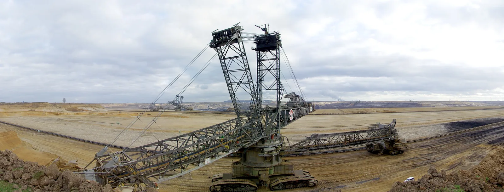

Polttoaineet ja lämpöarvo $E = Hm$
Miksi kilogrammasta bensiiniä ja kilogrammasta ilmakuivaa polttopuuta vapautuu palaessa eri määrä energiaa, vaikka molemmat ovat vain palavaa ainetta?
Pohjatiedot
- Energia ei synny eikä häviä, vaan muuntuu muodosta toiseenluku Energialajit ja energian säilyminen
- Energian yksikkö on joule, ja $1\,\text{kWh} = 3{,}6\,\text{MJ}$luku Energian muuntuminen ja yksikkö joule
- Hyötysuhde kertoo, kuinka suuri osa otetusta energiasta on hyötyäluku Hyötysuhde
- Teho on energia aikayksikköä kohtiluku Teho
Ydinpolku: etene vaiheiden mukaan. Ydinpolkuun kuuluvat laskujen lisäksi tutkimukset, selitykset ja kuvaajat. Valinnainen-merkityt tehtävät tarjoavat lisäharjoittelua. Valinnaisia tehtäviä 5.
Pohdinta
Huoltoasemalla autoon tankataan bensiiniä, ja mökin takassa poltetaan polttopuuta. Suklaalevyn kyljessä lukee "energia $2200\,\text{kJ}$ sadassa grammassa". Kaikissa kolmessa energiaa on varastoituna aineeseen, ja se vapautuu, kun aine palaa tai kun elimistö käyttää sen.
Vapautuuko eri aineiden kilogrammasta yhtä paljon energiaa, ja miten vapautuvan energian voi laskea?
Valinnainen Kertaa: energian muuntuminen
Ennusta
Tee ennusteet ennen tutkimista 2 kysymystä
Ennuste 1: bensiini ja polttopuu
Ennuste 2: suklaa ja polttopuu
Tutki
Polttoaineiden lämpöarvot
Tilastoaineisto · Polttopuu ja jyrsinturve: Tilastokeskus, Polttoaineluokitus (2017); maakaasu, kivihiili ja diesel: IPCC 2006 Guidelines, osa 2, oletuslämpöarvojen taulukko (2006); bensiini: suomalaisen etanolia sisältävän bensiinin tyypillinen arvo (puhtaalle bensiinille IPCC 2006 antaa $44{,}3\,\text{MJ/kg}$); puupelletti: tyypillinen arvo. Tehollisia lämpöarvoja, pyöristetty
Taulukossa on yleisten polttoaineiden lämpöarvot $H$. Lämpöarvo on yhdestä kilogrammasta polttoainetta vapautuva energia.
| Polttoaine | $H$ ($\text{MJ/kg}$) |
|---|---|
| maakaasu | 48 |
| bensiini | 43 |
| diesel | 43 |
| kivihiili | 26 |
| puupelletti | 17 |
| polttopuu (ilmakuiva) | 15 |
| turve (jyrsinturve) | 10 |
Valinnainen Kuinka energia riippuu massasta?
Mallin laskemia arvoja · esimerkki: ilmakuivan polttopuun poltosta lasketut arvot lämpöarvolla $15\,\text{MJ/kg}$
Ilmakuivaa polttopuuta poltetaan eri määriä. Taulukossa on poltetun puun massa $m$ ja siitä vapautuva energia $E$.
| $m$ ($\text{kg}$) | $E$ ($\text{MJ}$) |
|---|---|
| 1,0 | 15 |
| 2,0 | 30 |
| 4,0 | 60 |
| 8,0 | 120 |
Pakkausmerkintä yksikköön MJ/kg
Keksitty esimerkkiaineisto · esimerkkimerkintä, ei oikean tuotteen tietoja
Suklaalevyn pakkauksessa lukee:
| Ravintoarvo | sadassa grammassa |
|---|---|
| energia | $2200\,\text{kJ}$ |
Kun energia muutetaan megajouleiksi ja massa kilogrammoiksi, merkinnästä saa suklaan energiasisällön $e$ yksikössä $\text{MJ/kg}$. Se ilmoitetaan samassa yksikössä kuin lämpöarvo, mutta se kuvaa elimistön hyödynnettävissä olevaa energiaa.
Mikä on suklaan energiasisältö $e$ yksikössä $\text{MJ/kg}$?
Vihje 1: ohjaava kysymys
Kuinka monta megajoulea on $2200\,\text{kJ}$ ja kuinka monta kilogrammaa on $100\,\text{g}$?
Vihje 2: mikä yhteys
Vihje 3: välivaihe
Energiasisältö on energia jaettuna massalla: $e = 2{,}2\,\text{MJ} : 0{,}100\,\text{kg}$.
Näytä ratkaisu
Annettu
energia $2200\,\text{kJ}$ massaa $100\,\text{g}$ kohti
Kysytty
energiasisältö $e$ yksikössä $\text{MJ/kg}$
Periaate
Energiasisältö on energia yhtä kilogrammaa kohti, ja pakkausmerkintä antaa elimistön hyödynnettävissä olevan energian sadalle grammalle. Merkintä muutetaan siis yksikköön megajoulea kilogrammaa kohti, samoin kuin lämpöarvo ilmoitetaan.
Kaava
$e = \dfrac{E}{m}$
Muunnokset
Sijoitus
Vastaus
$22\,\text{MJ/kg}$
Kaksi merkitsevää numeroa kuten luvussa $2200\,\text{kJ}$.
Järkevyys
Polttopuun lämpöarvo on $15\,\text{MJ/kg}$ ja bensiinin $43\,\text{MJ/kg}$. Suklaan energiasisältö on näiden välissä, mikä on uskottava tulos: suklaa sisältää paljon rasvaa ja sokeria. Luvut eivät ole aivan sama suure, mutta suuruusluokan vertailuun ne käyvät.
Johtopäätös: mitä lämpöarvo kertoo?
Kirjoita taulukoiden ja pakkausmerkinnän perusteella: mitä lämpöarvo kertoo polttoaineesta, ja miten sen avulla lasketaan massasta vapautuva energia? Miten ruoan pakkausmerkintä liittyy tähän?
Mallivastaus
Lämpöarvo $H$ kertoo, kuinka paljon energiaa vapautuu yhdestä kilogrammasta polttoainetta, ja se mitataan yksiköissä $\text{MJ/kg}$. Taulukossa bensiinillä lämpöarvo on $43\,\text{MJ/kg}$ ja ilmakuivalla puulla $15\,\text{MJ/kg}$, joten saman massan polttaminen vapauttaa eri määrän energiaa. Energia on suoraan verrannollinen massaan, joten vapautuva energia saadaan kertomalla lämpöarvo massalla: $E = Hm$, kun massa on kilogrammoina. Ruoan pakkausmerkintä kertoo energian sadalle grammalle. Kun se muutetaan megajouleiksi kilogrammaa kohti, saadaan ruoan energiasisältö, esimerkiksi $22\,\text{MJ/kg}$ suklaalle. Se ilmoitetaan samassa yksikössä kuin lämpöarvo, mutta se kuvaa elimistön hyödynnettävissä olevaa energiaa, kun taas lämpöarvo kuvaa palamisessa vapautuvaa energiaa.
Arvioi oma vastauksesi
Rastita kohdat, jotka omassa vastauksessasi jo on.
Kertaa asia teoriasta ja harjoittele tehtävillä.
Teoria
Ydinajatus
Tässä luvussa polttoaine tarkoittaa kemiallista polttoainetta: ainetta, jonka kemiallista energiaa vapautetaan polttamalla. Myös ydinvoimalan uraania sanotaan polttoaineeksi, mutta ydinpolttoaine ei pala: sen energia on ydinenergiaa (luku Energialajit ja energian säilyminen). Kemiallinen energia on energiaa, joka on varastoituna aineen atomien ja molekyylien väliseen rakenteeseen. Kun polttoaine palaa, rakenne muuttuu ja energiaa vapautuu lämpönä ja valona. Energiaa ei synny tyhjästä, vaan kemiallinen energia muuntuu toiseen muotoon. Sama pätee ruokaan: elimistö "polttaa" ravinnon hitaasti ja vapauttaa siitä energiaa.
Eri polttoaineet sisältävät massaansa nähden eri määrän kemiallista energiaa. Suure, joka kertoo tämän, on lämpöarvo $H$. Se on polttoaineen palaessa vapautuva energia yhtä kilogrammaa kohti, ja sen yksikkö on esimerkiksi $\text{MJ/kg}$. Bensiinin lämpöarvo on noin $43\,\text{MJ/kg}$ eli yhdestä kilogrammasta vapautuu noin $43\,\text{MJ}$ (noin $43 \cdot 10^{6}\,\text{J}$). Ilmakuivan polttopuun (kosteus $20\text{–}25\,\%$) lämpöarvo on vain noin $15\,\text{MJ/kg}$, joten saman energian saamiseksi puuta tarvitaan lähes kolminkertainen massa.
Koska lämpöarvo on energia massayksikköä kohti, vapautuva energia on suoraan verrannollinen palaneen polttoaineen massaan: kaksi kertaa enemmän polttoainetta vapauttaa kaksi kertaa enemmän energiaa. Tästä saadaan laki, jolla vapautuva energia lasketaan.

Lämpöarvo ja vapautuva energia
Polttoaineesta palaessaan vapautuva energia on
$$E = Hm$$
missä $E$ on vapautuva energia ($\text{J}$ tai $\text{MJ}$), $H$ polttoaineen lämpöarvo ($\text{MJ/kg}$) ja $m$ palaneen polttoaineen massa ($\text{kg}$). Massa on laskettava kilogrammoina, koska lämpöarvo on energia kilogrammaa kohti. Esimerkiksi $3{,}0\,\text{kg}$ bensiiniä vapauttaa $43\,\tfrac{\text{MJ}}{\text{kg}} \cdot 3{,}0\,\text{kg} = 129\,\text{MJ} \approx 130\,\text{MJ}$, koska massa tunnetaan kahden numeron tarkkuudella.
Taulukossa on yleisten polttoaineiden lämpöarvoja. Ne ovat tehollisia lämpöarvoja eli lämpöarvoja, joissa savukaasun vesihöyryn tiivistymislämpöä ei lasketa mukaan, ja energiatilastot käyttävät niitä. Arvot on pyöristetty: todellinen arvo vaihtelee polttoaine-erän mukaan.
| Polttoaine | $H\ (\text{MJ/kg})$ |
|---|---|
| maakaasu | 48 |
| bensiini | 43 |
| diesel | 43 |
| kivihiili | 26 |
| puupelletti | 17 |
| polttopuu (ilmakuiva) | 15 |
| turve (jyrsinturve) | 10 |
Lähteet: polttopuu ($13\text{–}15\,\text{GJ/t}$, kosteus $20\text{–}25\,\%$) ja jyrsinturve ($9\text{–}11\,\text{GJ/t}$, kosteus $40\text{–}50\,\%$): Tilastokeskus, Polttoaineluokitus, määritelmät (2017). Maakaasu $48{,}0\,\text{MJ/kg}$: IPCC, 2006 Guidelines for National Greenhouse Gas Inventories, osa 2, oletuslämpöarvojen taulukko (2006). Tyypillisiä arvoja: kivihiili (IPCC 2006: $25{,}8\,\text{MJ/kg}$), diesel (IPCC 2006: $43{,}0\,\text{MJ/kg}$), bensiini ($43\,\text{MJ/kg}$; puhtaan bensiinin IPCC 2006 -arvo on $44{,}3\,\text{MJ/kg}$, mutta suomalaisessa bensiinissä on etanolia, jonka lämpöarvo on pienempi) ja puupelletti (julkaistu tyypillinen arvo). Arvot on pyöristetty.
Kosteus ja polttoaineen laatu
Märkä puu antaa kilogrammaa kohti vähemmän energiaa kuin kuiva, koska osa sen massasta on vettä, joka ei pala, ja lisäksi osa vapautuvasta energiasta kuluu tämän veden höyrystämiseen. Siksi taulukon polttopuu on ilmakuivaa (kosteus $20\text{–}25\,\%$) ja turve jyrsinturvetta, jonka kosteus on $40\text{–}50\,\%$. Täysin kuivan puun lämpöarvo olisi noin $19\,\text{MJ/kg}$.
Ruoan energiasisältö ja lämpöarvo
Ravintoarvomerkinnässä energia ilmoitetaan sadalle grammalle, esimerkiksi $2200\,\text{kJ}$ per $100\,\text{g}$. Kun energia muutetaan megajouleiksi ja massa kilogrammoiksi, saadaan ruoan energiasisältö massayksikköä kohti, tässä $e = 22\,\text{MJ/kg}$. Sekä ruoan energiasisältö että polttoaineen lämpöarvo voidaan ilmoittaa yksikössä $\text{MJ/kg}$. Ruoan ravintoarvomerkintä kuvaa elimistön hyödynnettävissä olevaa energiaa, kun taas polttoaineen lämpöarvo kuvaa palamisessa vapautuvaa energiaa. Ne eivät siis ole sama suure: elimistö ei saa ruoasta kaikkea energiaa, joka vapautuisi sen palaessa, koska esimerkiksi osa ruoasta ei imeydy suolistosta. Laskutapa on silti sama kuin lämpöarvolla: ruoan energia on $E = em$.
| Ruoka | $\text{kJ}$ / $100\,\text{g}$ | $e$ ($\text{MJ/kg}$) |
|---|---|---|
| peruna, keitetty | 300 | 3 |
| ruisleipä | 1000 | 10 |
| maitosuklaa | 2200 | 22 |
| voi | 3000 | 30 |
Tyypillisiä ravintoarvoja (vertailukohta Fineli, THL), pyöristetty ja vaihtelee tuotteittain.
Yleinen virhekäsitys
- Lämpöarvo ei ole lämpötila. Moni luulee, että lämpöarvo kertoo, kuinka kuumana polttoaine palaa. Se on kuitenkin energia massayksikköä kohti.
- Palaessa ei synny energiaa. Polttoaineen kemiallinen energia muuntuu lämmöksi ja valoksi, mutta energiaa ei synny tyhjästä.
- Vapautunut energia ei ole hyötyenergia. Kattilassa, takassa ja moottorissa osa energiasta menee hukkaan, ja hyödyn osuus lasketaan hyötysuhteella (luku Hyötysuhde).
Hiiltä sisältävien polttoaineiden, kuten puun, turpeen ja fossiilisten polttoaineiden, palamisessa syntyy myös hiilidioksidia, jota käsitellään luvussa Energiantuotanto, ympäristö ja ilmastonmuutos.
Tiivistelmä
- Polttoaineen kemiallinen energia vapautuu palaessa lämpönä ja valona. Energia ei synny vaan muuntuu.
- Lämpöarvo $H$ on vapautuva energia yhtä kilogrammaa polttoainetta kohti, yksikkö $\text{MJ/kg}$.
- Vapautuva energia on $E = Hm$, kun massa $m$ on kilogrammoina.
- Bensiinin ja dieselin lämpöarvo on noin $43\,\text{MJ/kg}$, kivihiilen $26$, ilmakuivan puun $15$ ja turpeen $10\,\text{MJ/kg}$.
- Ruoan pakkausmerkinnän $\text{kJ}$ per $100\,\text{g}$ voidaan muuttaa yksikköön $\text{MJ/kg}$ kuten lämpöarvo, mutta se kuvaa elimistön hyödynnettävissä olevaa energiaa, ei palamisessa vapautuvaa energiaa.
- Vapautunut energia ei ole sama kuin hyöty: hyötyenergia saadaan hyötysuhteella.
Valinnainen Palaa ennusteisiisi
Vertaa ennusteitasi taulukkoihin ja yhtälöön $E = Hm$. Palaa sitten alun kysymykseen: vapautuuko eri aineiden kilogrammasta yhtä paljon energiaa? Mitä pakkausmerkinnän $\text{kJ}$-luku kertoo?
Muuttaisitko ennustettasi?
Esimerkit
Katso ensin mallilasku. Harjoittele sitten samaa itse: vihjeet auttavat, jos jäät jumiin.
Esimerkki
Tehtävä
Takassa poltetaan $6{,}0\,\text{kg}$ ilmakuivaa polttopuuta, jonka lämpöarvo on $15\,\tfrac{\text{MJ}}{\text{kg}}$. Kuinka paljon energiaa puusta vapautuu? Anna vastaus megajouleina ja kilowattitunteina.
Vaihe 1/7
Tunnetut ja kysytty. Polttopuun massa $m = 6{,}0\,\text{kg}$ ja taulukosta lämpöarvo $H = 15\,\tfrac{\text{MJ}}{\text{kg}}$. Kysytään vapautuvaa energiaa $E$.
Vaihe 2/7
Periaate. Puu palaa, joten sen kemiallinen energia muuntuu lämmöksi. Lämpöarvo kertoo energian yhtä kilogrammaa kohti, joten vapautuva energia saadaan kertomalla lämpöarvo massalla.
Vaihe 3/7
Kaava ratkaistuna. Kysytty suure $E$ on jo yhtälön vasemmalla puolella:
$$E = Hm$$
Vaihe 4/7
Yksikkömuunnokset. Massa on jo kilogrammoina, joten megajoulet voi laskea suoraan. Kilowattitunteja varten käytetään yhteyttä $1\,\text{kWh} = 3{,}6\,\text{MJ}$, josta $1\,\text{MJ} = 1\,\text{kWh} : 3{,}6$.
Vaihe 5/7
Sijoitus. $$\begin{aligned} E &= Hm \\ &= 15\,\tfrac{\text{MJ}}{\text{kg}} \cdot 6{,}0\,\text{kg} \\ &= 90\,\text{MJ} \end{aligned}$$
Kilowattitunteina
Vaihe 6/7
Tulos. Puusta vapautuu energiaa $90\,\text{MJ}$ eli $25\,\text{kWh}$. Vastaus on annettu kahdella merkitsevällä numerolla, koska sekä massa $6{,}0\,\text{kg}$ että lämpöarvo $15\,\tfrac{\text{MJ}}{\text{kg}}$ tunnetaan kahden numeron tarkkuudella.
Vaihe 7/7
Järkevyys. Yksi kilogramma puuta antaa $15\,\text{MJ}$ eli noin $4\,\text{kWh}$, joten kuusi kilogrammaa antaa noin kuusi kertaa niin paljon: $6 \cdot 4\,\text{kWh} = 24\,\text{kWh}$, mikä sopii tulokseen. Energia vastaa yhden kilowatin ($1\,\text{kW}$) lämmitintä, joka on päällä $25\,\text{h}$. Takasta ei kuitenkaan saada koko määrää huoneen lämmöksi, koska osa lämmöstä poistuu savukaasujen mukana (luku Hyötysuhde).
Valinnainen Etsi virhe
Sovella uuteen tilanteeseen
Retkikeittimen kaasupatruunassa on $0{,}230\,\text{kg}$ nestekaasua, jonka lämpöarvo on noin $46\,\text{MJ/kg}$. Keittimen hyötysuhde on $60\,\%$. Kuinka paljon hyötyenergiaa saadaan, kun koko patruunan kaasu poltetaan? Vastaa megajouleina.
Vihje 1: ohjaava kysymys
Kuinka paljon energiaa kaasusta vapautuu palaessaan? Mikä laki kertoo sen?
Vihje 2: mikä yhteys
Vapautuva energia on $E_\text{sisään} = Hm$. Hyötysuhde on
(luku Hyötysuhde), josta $E_\text{hyöty} = \eta\, E_\text{sisään}$.
Vihje 3: välivaihe
$E_\text{sisään} = 46\,\text{MJ/kg} \cdot 0{,}230\,\text{kg}$ ja $E_\text{hyöty} = 0{,}60 \cdot E_\text{sisään}$.
Näytä ratkaisu
Annettu
nestekaasun massa $m = 0{,}230\,\text{kg}$, lämpöarvo $H = 46\,\text{MJ/kg}$ ja keittimen hyötysuhde $\eta = 60\,\% = 0{,}60$
Kysytty
hyötyenergia $E_\text{hyöty}$ megajouleina
Periaate
Kaasun palaessa sen kemiallinen energia vapautuu lämpöarvon mukaan. Vapautuneesta energiasta vain hyötysuhteen osoittama osuus on hyötyä (luku Hyötysuhde), koska osa lämmöstä menee ympäristöön.
Kaava
josta $E_\text{hyöty} = \eta\, E_\text{sisään}$
Muunnokset
Ei tarvita: massa on kilogrammoina ja $60\,\% = 0{,}60$.
Sijoitus
Vastaus
$6{,}3\,\text{MJ}$
Kaksi merkitsevää numeroa kuten tiedoissa $46\,\text{MJ/kg}$ ja $60\,\%$.
Järkevyys
Vapautuva energia $10{,}6\,\text{MJ}$ on suuruusluokaltaan oikea, koska neljäsosa kilogrammaa polttoainetta antaa noin $0{,}25 \cdot 46\,\text{MJ} \approx 11\,\text{MJ}$. Hyötyenergia on sitä pienempi, noin kuusi kymmenesosaa, kuten hyötysuhde $60\,\%$ vaatii.
Kertaa luvun käsitteet
Jos valitset Kertaa myöhemmin, kortti siirtyy kertauspakkaasi.
- Lämpöarvo
- Kertoo täydellisessä palamisessa vapautuvan energian polttoaineen massayksikköä kohti.
Tarkista osaamisesi
Testaa lopuksi, osaatko luvun tavoitteet. Jos vastaus menee väärin, saat ehdotuksen, mitä kerrata.
Exit ticket
Vastaa ensin itse ja avaa vastaus vasta sitten.
- Kuinka paljon energiaa vapautuu, kun poltetaan $5{,}0\,\text{kg}$ ilmakuivaa polttopuuta ($H = 15\,\text{MJ/kg}$)?
Vastaus
$E$$= Hm$$= 15\,\text{MJ/kg} \cdot 5{,}0\,\text{kg}$$= 75\,\text{MJ}$
1. Käsite
2. Kilogrammaa kohti ja yhteensä
3. Ruoka ja polttoaine
4. Yksikkömuunnos ja energia
Bensiinin lämpöarvo on $43\,\text{MJ/kg}$. Kuinka monta kilowattituntia energiaa vapautuu, kun poltetaan $1{,}0\,\text{kg}$ bensiiniä? Vastaa kilowattitunteina.
Vihje 1: ohjaava kysymys
Ensin lasketaan energia megajouleina. Sitten se muutetaan kilowattitunneiksi.
Vihje 2: mikä yhteys
$E = Hm$ ja $1\,\text{kWh} = 3{,}6\,\text{MJ}$ (luku Energian muuntuminen ja yksikkö joule).
Vihje 3: välivaihe
Koska $1\,\text{kWh} = 3{,}6\,\text{MJ}$, on $1\,\text{MJ} = 1\,\text{kWh} : 3{,}6$. Sijoita tämä.
Näytä ratkaisu
Annettu
bensiinin lämpöarvo $H = 43\,\text{MJ/kg}$ ja massa $m = 1{,}0\,\text{kg}$
Kysytty
vapautuva energia $E$ kilowattitunteina
Periaate
Bensiinin kemiallinen energia vapautuu palaessa, ja lämpöarvo kertoo energian yhtä kilogrammaa kohti. Ensin lasketaan energia megajouleina, sitten se muutetaan kilowattitunneiksi.
Kaava
$E = Hm$
Muunnokset
joten $1\,\text{MJ} = 1\,\text{kWh} : 3{,}6$.
Sijoitus
Vastaus
$12\,\text{kWh}$
Kaksi merkitsevää numeroa kuten tiedoissa $43\,\text{MJ/kg}$ ja $1{,}0\,\text{kg}$.
Järkevyys
Kilowattitunti on suuri yksikkö, joten lukua tulee vähemmän kuin megajoulea. Arvio: $3{,}6 \cdot 12 = 43{,}2$, mikä on $43\,\text{MJ}$, joten $12\,\text{kWh}$ on oikein.
Ehdotus: yksi vastaus ei vielä kerro koko osaamistasi, mutta kertaa asia teoriasta ja tee ydintehtävät.
Valinnainen 5. Selitä
Kymmenen kilon säkki puupellettejä ja kymmenen kilon bensiinikanisteri poltetaan.
Kumpi vapauttaa enemmän energiaa, ja kuinka paljon? Selitä myös, miksi vapautunut energia ei ole sama asia kuin hyödyksi saatu energia.
Mallivastaus
Pelletin lämpöarvo on noin $17\,\text{MJ/kg}$ ja bensiinin noin $43\,\text{MJ/kg}$. Lain $E = Hm$ mukaan pelleteistä vapautuu $17\,\tfrac{\text{MJ}}{\text{kg}} \cdot 10\,\text{kg} = 170\,\text{MJ}$ ja bensiinistä $43\,\tfrac{\text{MJ}}{\text{kg}} \cdot 10\,\text{kg} = 430\,\text{MJ}$, joten bensiinistä vapautuu noin $2{,}5$ kertaa enemmän. Vapautuneesta energiasta vain osa muuttuu hyödylliseen muotoon, koska osa lämmöstä menee kattilassa tai moottorissa savukaasujen ja ympäristön mukana. Hyödyn osuus lasketaan hyötysuhteella.
Arvioi oma vastauksesi
Rastita kohdat, jotka omassa vastauksessasi jo on.
Kertaa asia teoriasta ja harjoittele tehtävillä.
Tehtävät
Taso 1 · perusharjoitus 8 tehtävää
Yksi kaava tai yksi päättelyaskel. Ydintehtävät ensin, loput lisäharjoitusta.
- Tehtävä 5-1Ydintehtävä
Moottorisahaan ostettiin huoltoasemalta $2{,}0\,\text{kg}$ bensiiniä. Bensiinin lämpöarvo on $43\,\tfrac{\text{MJ}}{\text{kg}}$. Kuinka paljon energiaa bensiinin palaessa vapautuu? Anna vastaus megajouleina.
Vastaus
$86\,\text{MJ}$
Näytä ratkaisu
Annettu
bensiini, massa $m = 2{,}0\,\text{kg}$ ja lämpöarvo $H = 43\,\tfrac{\text{MJ}}{\text{kg}}$
Kysytty
palamisessa vapautuva energia $E$ megajouleina
Periaate
Bensiinin kemiallinen energia vapautuu palaessa. Lämpöarvo kertoo vapautuvan energian yhtä kilogrammaa kohti, joten energia on lämpöarvon ja massan tulo.
Kaava
$E = Hm$
Muunnokset
Ei tarvita: massa on jo kilogrammoina ja vastaus halutaan megajouleina, kuten lämpöarvossa.
Sijoitus
$E$$= 43\,\tfrac{\text{MJ}}{\text{kg}} \cdot 2{,}0\,\text{kg}$$= 86\,\text{MJ}$Vastaus
$86\,\text{MJ}$
Kaksi merkitsevää numeroa kuten massassa $2{,}0\,\text{kg}$.
Järkevyys
Yksi kilogramma antaa $43\,\text{MJ}$, joten kaksi kilogrammaa antaa kaksinkertaisen määrän, noin $2 \cdot 40\,\text{MJ} = 80\,\text{MJ}$. Tulos on suuruusluokaltaan oikea ja positiivinen.
- Tehtävä 5-2
Kaasukattilassa poltetaan talvipäivänä $2{,}0\,\text{kg}$ maakaasua. Lue maakaasun lämpöarvo kuvan pylväskaaviosta. Kuinka paljon energiaa kaasusta vapautuu? Anna vastaus megajouleina.
Vastaus
$96\,\text{MJ}$
Näytä ratkaisu
Annettu
maakaasun massa $m = 2{,}0\,\text{kg}$; lämpöarvo $H = 48\,\tfrac{\text{MJ}}{\text{kg}}$ luetaan kuvasta
Kysytty
vapautuva energia $E$ megajouleina
Periaate
Kaasun palaessa sen kemiallinen energia muuntuu lämmöksi. Vapautuva energia on verrannollinen massaan, joten käytetään lämpöarvon määritelmää.
Kuvaajan lukeminen
Pylväskaavion ylin pylväs on maakaasun, ja sen päässä on luku $48$. Vaaka-akselin yksikkö on $\text{MJ/kg}$, joten $H = 48\,\tfrac{\text{MJ}}{\text{kg}}$; pylvään pää on myös vähän ennen ruudukon viivaa $50$.
Kaava
$E = Hm$
Muunnokset
Ei tarvita: massa on kilogrammoina ja lämpöarvo megajouleina kilogrammaa kohti, joten energia saadaan megajouleina.
Sijoitus
$E$$= 48\,\tfrac{\text{MJ}}{\text{kg}} \cdot 2{,}0\,\text{kg}$$= 96\,\text{MJ}$Vastaus
$96\,\text{MJ}$
Kaksi merkitsevää numeroa kuten massassa $2{,}0\,\text{kg}$.
Järkevyys
Kaasun lämpöarvo on noin $50\,\tfrac{\text{MJ}}{\text{kg}}$, joten kahdesta kilogrammasta saadaan noin $100\,\text{MJ}$. Tulos on hieman sitä pienempi, koska $48 < 50$.
- Tehtävä 5-3
Kivihiilivoimalaitos polttaa tunnissa $12\,000\,\text{kg}$ kivihiiltä, jonka lämpöarvo on $26\,\tfrac{\text{MJ}}{\text{kg}}$. Kuinka paljon energiaa kivihiilestä vapautuu tunnissa? Anna vastaus megajouleina.
Vastaus
$310\,000\,\text{MJ}$
Näytä ratkaisu
Annettu
kivihiili, massa $m = 12\,000\,\text{kg}$ ja lämpöarvo $H = 26\,\tfrac{\text{MJ}}{\text{kg}}$
Kysytty
tunnissa vapautuva energia $E$ megajouleina
Periaate
Kivihiilen kemiallinen energia vapautuu palaessa, ja vapautuva energia saadaan lämpöarvon ja massan tulona. Massa on jo kilogrammoina, kuten lämpöarvo vaatii.
Kaava
$E = Hm$
Muunnokset
Ei tarvita: massa on kilogrammoina ja vastaus halutaan megajouleina, kuten lämpöarvossa.
Sijoitus
$E$$= 26\,\tfrac{\text{MJ}}{\text{kg}} \cdot 12\,000\,\text{kg}$$= 312\,000\,\text{MJ}$Vastaus
$310\,000\,\text{MJ}$
Kaksi merkitsevää numeroa kuten lämpöarvossa $26\,\tfrac{\text{MJ}}{\text{kg}}$.
Järkevyys
Karkeasti
$10\,000\,\text{kg} \cdot 30\,\tfrac{\text{MJ}}{\text{kg}}$$= 300\,000\,\text{MJ}$Voimalaitoksen tunnin energia on suuri, koska polttoainetta kuluu noin kymmenen tonnia.
- Tehtävä 5-4
Lämpölaitoksen varastosta kuljetetaan polttoon $400\,\text{kg}$ jyrsinturvetta, jonka lämpöarvo on $10\,\tfrac{\text{MJ}}{\text{kg}}$. Kuinka paljon energiaa turpeesta vapautuu? Anna vastaus megajouleina.
Vastaus
$4000\,\text{MJ}$
Näytä ratkaisu
Annettu
jyrsinturve, massa $m = 400\,\text{kg}$ ja lämpöarvo $H = 10\,\tfrac{\text{MJ}}{\text{kg}}$
Kysytty
vapautuva energia $E$ megajouleina
Periaate
Turpeen palaessa sen kemiallinen energia vapautuu, ja energia on lämpöarvon ja massan tulo.
Kaava
$E = Hm$
Muunnokset
Ei tarvita: massa on jo kilogrammoina.
Sijoitus
$E$$= 10\,\tfrac{\text{MJ}}{\text{kg}} \cdot 400\,\text{kg}$$= 4000\,\text{MJ}$Vastaus
$4000\,\text{MJ}$
Eli $4{,}0 \cdot 10^3\,\text{MJ}$, kaksi merkitsevää numeroa kuten lämpöarvossa $10\,\tfrac{\text{MJ}}{\text{kg}}$.
Järkevyys
Turpeen lämpöarvo on pieni, joten sata kilogrammaa antaa vasta $1000\,\text{MJ}$. Neljä kertaa enemmän massaa antaa neljä kertaa enemmän energiaa, $4000\,\text{MJ}$.
- Tehtävä 5-5
Retkeilijän pähkinäsekoituksen energiasisältö on $24\,\tfrac{\text{MJ}}{\text{kg}}$ (esimerkkiarvo). Kourallinen pähkinöitä painaa $0{,}040\,\text{kg}$. Kuinka paljon energiaa kourallisesta saadaan? Anna vastaus megajouleina.
Vastaus
$0{,}96\,\text{MJ}$
Näytä ratkaisu
Annettu
pähkinät, energiasisältö $e = 24\,\tfrac{\text{MJ}}{\text{kg}}$ ja massa $m = 0{,}040\,\text{kg}$
Kysytty
pähkinöiden sisältämä energia $E$ megajouleina
Periaate
Ruoan energia lasketaan samalla tavalla kuin polttoaineen: energiasisältö on elimistön hyödynnettävissä oleva energia kilogrammaa kohti, joten energia on sen ja massan tulo. Energiasisältö ei ole lämpöarvo, vaikka sen yksikkö on sama.
Kaava
$E = em$
Muunnokset
Ei tarvita: massa on kilogrammoina ja vastaus halutaan megajouleina.
Sijoitus
$E$$= em$$= 24\,\tfrac{\text{MJ}}{\text{kg}} \cdot 0{,}040\,\text{kg}$$= 0{,}96\,\text{MJ}$Vastaus
$0{,}96\,\text{MJ}$
Kaksi merkitsevää numeroa kuten massassa $0{,}040\,\text{kg}$.
Järkevyys
Arvio pyöristetyillä luvuilla: $25\,\tfrac{\text{MJ}}{\text{kg}} \cdot 0{,}04\,\text{kg} = 1\,\text{MJ}$, joten $0{,}96\,\text{MJ}$ on oikeaa suuruusluokkaa. Se on noin $1000\,\text{kJ}$, tyypillinen pienen välipalan energia.
- Tehtävä 5-6Ydintehtävä
Bensiinin lämpöarvo on $43\,\tfrac{\text{MJ}}{\text{kg}}$. Mitä tämä tarkoittaa?
Vastaus
Yhdestä kilogrammasta bensiiniä vapautuu palaessa energiaa $43\,\text{MJ}$.
Näytä ratkaisu
Kysytty
mitä bensiinin lämpöarvo $H = 43\,\tfrac{\text{MJ}}{\text{kg}}$ kertoo
Periaate
Lämpöarvo on polttoaineen palaessa vapautuva energia massayksikköä kohti, joten sen yksikkö $\text{MJ/kg}$ on energia jaettuna massalla. Se ei ole lämpötila, eikä energiaa synny tyhjästä: kemiallinen energia muuntuu lämmöksi ja valoksi.
Mallivastaus
Yhdestä kilogrammasta bensiiniä vapautuu palaessa energiaa $43\,\text{MJ}$. Kahdesta kilogrammasta vapautuu kaksinkertainen määrä, $E = Hm = 43\,\tfrac{\text{MJ}}{\text{kg}} \cdot 2{,}0\,\text{kg} = 86\,\text{MJ}$. Lämpöarvo ei kerro liekin lämpötilaa, eikä se tarkoita, että energiaa syntyisi uutena.
- Tehtävä 5-7
Pelletinpolttimessa halutaan saada puupelleteistä vapautumaan energiaa $255\,\text{MJ}$. Pellettien lämpöarvo on $17\,\tfrac{\text{MJ}}{\text{kg}}$. Kuinka monta kilogrammaa pellettejä on poltettava? Anna vastaus kilogrammoina.
Vastaus
$15\,\text{kg}$
Näytä ratkaisu
Annettu
vapautuvan energian pitää olla $E = 255\,\text{MJ}$ ja pellettien lämpöarvo $H = 17\,\tfrac{\text{MJ}}{\text{kg}}$
Kysytty
poltettava pellettien massa $m$ kilogrammoina
Periaate
Pellettien kemiallinen energia vapautuu palaessa, ja vapautuva energia on lämpöarvon ja massan tulo. Massa saadaan jakamalla tarvittava energia lämpöarvolla.
Kaava
$E = Hm$, josta $m = \dfrac{E}{H}$
Muunnokset
Ei tarvita: energia on megajouleina ja lämpöarvo megajouleina kilogrammaa kohti, joten massa tulee kilogrammoina.
Sijoitus
$m$$= \dfrac{255\,\text{MJ}}{17\,\tfrac{\text{MJ}}{\text{kg}}}$$= 15\,\text{kg}$Vastaus
$15\,\text{kg}$
Kaksi merkitsevää numeroa kuten lämpöarvossa $17\,\tfrac{\text{MJ}}{\text{kg}}$.
Järkevyys
Yksi kilogramma antaa $17\,\text{MJ}$, joten $15\,\text{kg}$ antaa $15 \cdot 17\,\text{MJ} = 255\,\text{MJ}$, mikä on tehtävän energia.
- Tehtävä 5-8
Kolmesta kilogrammasta maakaasua vapautuu palaessa energiaa $144\,\text{MJ}$. Kuinka paljon tämä on kilowattitunteina? Käytä yhteyttä $1\,\text{kWh} = 3{,}6\,\text{MJ}$. Anna vastaus kilowattitunteina.
Vastaus
$40\,\text{kWh}$
Näytä ratkaisu
Annettu
maakaasun massa $m = 3{,}0\,\text{kg}$ ja vapautuva energia $E = 144\,\text{MJ}$
Kysytty
energia $E$ kilowattitunteina
Periaate
Megajoulet ja kilowattitunnit ovat saman suureen, energian, yksiköitä. Muunnos tehdään sijoittamalla yksikkö $1\,\text{kWh} = 3{,}6\,\text{MJ}$, joten energian arvo ei muutu, vain sen yksikkö.
Kaava
$E$ kilowattitunteina:
$E$$= \dfrac{144\,\text{MJ}}{3{,}6\,\text{MJ/kWh}}$Muunnokset
$1\,\text{kWh} = 3{,}6\,\text{MJ}$, josta $1\,\text{MJ} = 1\,\text{kWh} : 3{,}6$.
Sijoitus
$E$$= \dfrac{144\,\text{MJ}}{3{,}6\,\text{MJ/kWh}}$$= 40\,\text{kWh}$Vastaus
$40\,\text{kWh}$
Kaksi merkitsevää numeroa kuten energiassa $144\,\text{MJ}$ (muunnoskerroin $3{,}6$ on tarkka).
Järkevyys
Yksi kilowattitunti on $3{,}6\,\text{MJ}$, joten $40\,\text{kWh}$ on $40 \cdot 3{,}6\,\text{MJ} = 144\,\text{MJ}$, kuten tehtävässä. Kilowattitunteja saadaan vähemmän kuin megajoulejen lukumäärä, koska yksi kilowattitunti on suurempi energia kuin yksi megajoule.
Taso 2 · soveltava harjoitus 7 tehtävää
Kaksi vaihetta, mittausaineiston käsittely, yksikkömuunnos tai kaavan ratkaiseminen. Ydintehtävät ensin, loput lisäharjoitusta.
- Tehtävä 5-9
Leipäpaketin ravintoarvomerkinnässä (esimerkki) lukee: energia $1200\,\text{kJ}$ sadassa grammassa. Leipäviipale painaa $40\,\text{g}$. Kuinka paljon energiaa viipaleessa on? Anna vastaus kilojouleina.
Vastaus
$480\,\text{kJ}$
Näytä ratkaisu
Annettu
merkinnän mukaan $1200\,\text{kJ}$ sadassa grammassa, viipaleen massa $m = 40\,\text{g}$
Kysytty
viipaleen energia $E$ kilojouleina
Periaate
Merkintä kertoo ruoan energiasisällön eli elimistön hyödynnettävissä olevan energian massayksikköä kohti. Se ei ole lämpöarvo, mutta lasku tehdään samalla tavalla: merkintä muutetaan megajouleiksi kilogrammaa kohti ja kerrotaan massalla.
Kaava
$E = em$, missä energiasisältö $e$ on merkinnän energia jaettuna merkinnän massalla
Muunnokset
$1200\,\text{kJ}$$= 1200 \cdot (1 : 1000)\,\text{MJ}$$= 1{,}2\,\text{MJ}$$100\,\text{g}$$= 100 \cdot (1 : 1000)\,\text{kg}$$= 0{,}100\,\text{kg}$$40\,\text{g}$$= 40 \cdot (1 : 1000)\,\text{kg}$$= 0{,}040\,\text{kg}$Sijoitus
$e$$= 1{,}2\,\text{MJ} : 0{,}100\,\text{kg}$$= 12\,\tfrac{\text{MJ}}{\text{kg}}$$E$$= 12\,\tfrac{\text{MJ}}{\text{kg}} \cdot 0{,}040\,\text{kg}$$= 0{,}48\,\text{MJ}$$= 480\,\text{kJ}$Vastaus
$480\,\text{kJ}$
Kaksi merkitsevää numeroa kuten massassa $40\,\text{g}$.
Järkevyys
Viipale on $40\,\%$ sadasta grammasta, ja $40\,\%$ luvusta $1200\,\text{kJ}$ on $0{,}4 \cdot 1200\,\text{kJ} = 480\,\text{kJ}$. Tulos on pienempi kuin $1200\,\text{kJ}$, kuten pitää.
- Tehtävä 5-10
Työmaan dieselgeneraattorin pitää saada polttoaineesta vapautumaan energiaa $1{,}8\,\text{GJ}$. Dieselin lämpöarvo on $43\,\tfrac{\text{MJ}}{\text{kg}}$. Kuinka monta kilogrammaa dieseliä on poltettava? Anna vastaus kilogrammoina.
Vastaus
$42\,\text{kg}$
Näytä ratkaisu
Annettu
vapautuvan energian pitää olla $E = 1{,}8\,\text{GJ}$, dieselin lämpöarvo $H = 43\,\tfrac{\text{MJ}}{\text{kg}}$
Kysytty
poltettavan dieselin massa $m$ kilogrammoina
Periaate
Energia saadaan lain $E = Hm$ mukaan lämpöarvon ja massan tulona. Nyt energia tunnetaan ja massa on kysytty, joten laki ratkaistaan massalle.
Kaava
$E = Hm$, josta $m = \dfrac{E}{H}$
Muunnokset
$1{,}8\,\text{GJ}$$= 1{,}8 \cdot 1000\,\text{MJ}$$= 1800\,\text{MJ}$Sijoitus
$m$$= 1800\,\text{MJ} : 43\,\tfrac{\text{MJ}}{\text{kg}}$$= 41{,}86\,\text{kg}$Vastaus
$42\,\text{kg}$
Kaksi merkitsevää numeroa kuten tiedoissa $1{,}8\,\text{GJ}$ ja $43\,\tfrac{\text{MJ}}{\text{kg}}$.
Järkevyys
Yksi kilogramma antaa noin $43\,\text{MJ}$, joten $42\,\text{kg}$ antaa noin $42 \cdot 43\,\text{MJ} \approx 1800\,\text{MJ}$, mikä on $1{,}8\,\text{GJ}$.
- Tehtävä 5-11Ydintehtävä
Omakotitalon pelletinpolttimessa poltetaan $40\,\text{kg}$ puupellettejä, joiden lämpöarvo on $17\,\tfrac{\text{MJ}}{\text{kg}}$. Kattilan hyötysuhde on $85\,\%$. Kuinka paljon pelleteistä saadaan talon lämmitykseen hyötyenergiaa? Anna vastaus megajouleina.
Vastaus
$580\,\text{MJ}$
Näytä ratkaisu
Annettu
puupelletti, massa $m = 40\,\text{kg}$ ja lämpöarvo $H = 17\,\tfrac{\text{MJ}}{\text{kg}}$; kattilan hyötysuhde $\eta = 85\,\% = 0{,}85$
Kysytty
hyötyenergia $E_\text{hyöty}$ megajouleina
Periaate
Pelletit vapauttavat energiaa $E_\text{sisään} = Hm$. Hyötysuhde on hyödyksi saadun energian osuus otetusta energiasta (luku Hyötysuhde), joten vain osa vapautuvasta energiasta päätyy talon lämmitykseen.
Kaava
$E_\text{sisään}$$= Hm$$\eta$$= \dfrac{E_\text{hyöty}}{E_\text{sisään}}$josta $E_\text{hyöty} = \eta\, E_\text{sisään}$
Muunnokset
Ei tarvita: massa on kilogrammoina ja $85\,\% = 0{,}85$.
Sijoitus
$E_\text{sisään}$$= 17\,\tfrac{\text{MJ}}{\text{kg}} \cdot 40\,\text{kg}$$= 680\,\text{MJ}$$E_\text{hyöty}$$= 0{,}85 \cdot 680\,\text{MJ}$$= 578\,\text{MJ}$Vastaus
$580\,\text{MJ}$
Kaksi merkitsevää numeroa kuten tiedoissa $40\,\text{kg}$ ja $85\,\%$.
Järkevyys
Hyötyenergia on pienempi kuin vapautunut $680\,\text{MJ}$, koska osa lämmöstä menee savukaasujen mukana. Arvio: $0{,}85 \approx 0{,}9$ ja $0{,}9 \cdot 680\,\text{MJ} \approx 610\,\text{MJ}$, joten $578\,\text{MJ}$ on oikeaa suuruusluokkaa.
- Tehtävä 5-12
Henkilöauto tarvitsee $100\,\text{km}$:n ajamiseen liikkumiseen hyötyenergiaa $48\,\text{MJ}$. Moottorin hyötysuhde on $25\,\%$. Bensiinin lämpöarvo on $43\,\tfrac{\text{MJ}}{\text{kg}}$. Kuinka monta kilogrammaa bensiiniä $100\,\text{km}$:n matkalla kuluu? Anna vastaus kilogrammoina.
Vastaus
$4{,}5\,\text{kg}$
Näytä ratkaisu
Annettu
hyötyenergia $E_\text{hyöty} = 48\,\text{MJ}$, hyötysuhde $\eta = 25\,\% = 0{,}25$, bensiinin lämpöarvo $H = 43\,\tfrac{\text{MJ}}{\text{kg}}$
Kysytty
bensiinin massa $m$ kilogrammoina
Periaate
Moottori muuntaa vain osan bensiinin energiasta liikkumiseen (luku Hyötysuhde). Ensin lasketaan hyötysuhteesta bensiinistä tarvittava energia, ja sitten laista $E = Hm$ massa.
Kaava
$\eta$$= \dfrac{E_\text{hyöty}}{E_\text{sisään}}$josta
$E_\text{sisään}$$= \dfrac{E_\text{hyöty}}{\eta}$$E_\text{sisään} = Hm$, josta $m = \dfrac{E_\text{sisään}}{H}$
Muunnokset
Ei tarvita: $25\,\% = 0{,}25$ ja energiat ovat megajouleina.
Sijoitus
$E_\text{sisään}$$= 48\,\text{MJ} : 0{,}25$$= 192\,\text{MJ}$$m$$= 192\,\text{MJ} : 43\,\tfrac{\text{MJ}}{\text{kg}}$$= 4{,}465\,\text{kg}$Vastaus
$4{,}5\,\text{kg}$
Kaksi merkitsevää numeroa kuten tiedoissa $48\,\text{MJ}$ ja $25\,\%$.
Järkevyys
Bensiinin tiheys on noin $0{,}74\,\tfrac{\text{kg}}{\textsf{l}}$, joten $4{,}5\,\text{kg}$ on noin $6\,\textsf{l}$ eli tyypillinen kulutus sadalla kilometrillä. Bensiinin energia $192\,\text{MJ}$ on neljä kertaa hyötyenergia, koska hyötysuhde on neljäsosa.
- Tehtävä 5-13Ydintehtävä
Taulukossa on esimerkkiaineisto polttopuun tehollisesta lämpöarvosta eri kosteuksilla. Saunan lämmitykseen tarvitaan polttopuusta vapautuvaa energiaa $200\,\text{MJ}$.
Laske taulukon lämpöarvoilla tarvittava puun massa, kun kosteus on $20\,\%$ ja kun se on $40\,\%$. Kuinka monta kilogrammaa enemmän kosteaa ($40\,\%$) puuta tarvitaan kuin ilmakuivaa ($20\,\%$) puuta? Anna vastaus kilogrammoina.
Esimerkkiaineisto: polttopuun tehollinen lämpöarvo kosteuden mukaan Kosteus $(\%)$ $H\,(\text{MJ/kg})$ 0 19,0 10 16,9 20 14,7 30 12,6 40 10,4 50 8,3 Vastaus
$5{,}6\,\text{kg}$
Näytä ratkaisu
Annettu
tarvittava energia $E = 200\,\text{MJ}$; taulukosta lämpöarvo $H_{20} = 14{,}7\,\tfrac{\text{MJ}}{\text{kg}}$ kosteudella $20\,\%$ ja $H_{40} = 10{,}4\,\tfrac{\text{MJ}}{\text{kg}}$ kosteudella $40\,\%$
Kysytty
massojen erotus $\Delta m = m_{40} - m_{20}$ kilogrammoina
Periaate
Kummastakin puusta pitää vapautua sama energia. Lain $E = Hm$ mukaan massa on energia jaettuna lämpöarvolla. Kostea puu antaa kilogrammaa kohti vähemmän energiaa, koska osa sen massasta on vettä, joka ei pala ja jonka höyrystäminen kuluttaa energiaa.
Kaava
$E = Hm$, josta $m = \dfrac{E}{H}$, ja $\Delta m = m_{40} - m_{20}$
Muunnokset
Ei tarvita: energia on megajouleina ja lämpöarvot megajouleina kilogrammaa kohti.
Sijoitus
$m_{20}$$= 200\,\text{MJ} : 14{,}7\,\tfrac{\text{MJ}}{\text{kg}}$$= 13{,}61\,\text{kg}$$m_{40}$$= 200\,\text{MJ} : 10{,}4\,\tfrac{\text{MJ}}{\text{kg}}$$= 19{,}23\,\text{kg}$Erotus on
$\Delta m$$= 19{,}23\,\text{kg} - 13{,}61\,\text{kg}$$= 5{,}62\,\text{kg}$Vastaus
Kosteaa puuta tarvitaan $5{,}6\,\text{kg}$ enemmän, kaksi merkitsevää numeroa kuten tiedoissa $200\,\text{MJ}$.
Järkevyys
Lämpöarvojen suhde on $14{,}7 : 10{,}4 = 1{,}41$, joten kostean puun massa on noin $1{,}41$-kertainen: $1{,}41 \cdot 13{,}61\,\text{kg} = 19{,}2\,\text{kg}$. Kostea puu antaa vähemmän energiaa kilogrammaa kohti, joten massaa tarvitaan enemmän, ja erotus on positiivinen.
- Tehtävä 5-14
Oppilas laski tehtävän: ”Voimalaitos polttaa $3{,}0\,\text{t}$ kivihiiltä, jonka lämpöarvo on $26\,\tfrac{\text{MJ}}{\text{kg}}$. Energia on $E = Hm = 26 \cdot 3{,}0\,\text{MJ} = 78\,\text{MJ}$.” Missä oppilaan virhe on?
Vastaus
Massaa ei muutettu kilogrammoiksi: $3{,}0\,\text{t} = 3000\,\text{kg}$, joten oikea tulos on $78\,000\,\text{MJ}$.
Näytä ratkaisu
Kysytty
missä oppilaan laskussa on virhe ja mikä on oikea tulos
Periaate
Lämpöarvo on energia kilogrammaa kohti, joten kaavassa $E = Hm$ massa pitää sijoittaa kilogrammoina. Tonni ei ole kilogramma, vaan $1\,\text{t} = 1000\,\text{kg}$.
Mallivastaus
Oppilas sijoitti massan tonneina, vaikka lämpöarvo on yksikössä $\text{MJ/kg}$. Oikein $3{,}0\,\text{t} = 3{,}0 \cdot 1000\,\text{kg} = 3000\,\text{kg}$ ja $E = Hm = 26\,\tfrac{\text{MJ}}{\text{kg}} \cdot 3000\,\text{kg} = 78\,000\,\text{MJ}$. Oppilaan tulos $78\,\text{MJ}$ on tuhat kertaa liian pieni. Kaava, kivihiilen lämpöarvo ja vastauksen yksikkö $\text{MJ}$ olivat oikein. Tuhatkertainen virhe näkyy myös arviosta: yksi kilogramma kivihiiltä antaa jo $26\,\text{MJ}$, joten kolme tonnia antaa paljon enemmän kuin $78\,\text{MJ}$.
- Tehtävä 5-15
Esimerkkimittauksessa pellettipoltin ja sen pelletit seisoivat vaa'alla, ja poltin paloi koko ajan tasaisesti. Vaa'an lukema $m$ merkittiin $10\,\text{min}$ välein.
Piirrä massan kuvaaja ajan funktiona ja määritä sen kulmakertoimesta, kuinka monta kilogrammaa pellettejä palaa minuutissa. Pellettien lämpöarvo on $17\,\tfrac{\text{MJ}}{\text{kg}}$. Kuinka suuri teho palamisessa vapautuu? Anna vastaus kilowatteina.
Esimerkkimittaus: pellettipolttimen ja pellettien massa $t\,(\text{min})$ $m\,(\text{kg})$ 0 12,00 10 11,34 20 10,71 30 10,04 40 9,40 Vastaus
$18\,\text{kW}$
Näytä ratkaisu
Annettu
taulukko $(t, m)$, pellettien lämpöarvo $H = 17\,\tfrac{\text{MJ}}{\text{kg}}$; poltin palaa tasaisesti
Kysytty
palamisessa vapautuva teho $P$ kilowatteina
Periaate
Poltin palaa tasaisesti, joten massa pienenee tasaisesti ja kuvaaja $m(t)$ on suora; sen kulmakerroin kertoo palavan massan minuutissa. Poltetusta massasta vapautuu energia $E = Hm$, ja teho on energia aikayksikköä kohti, $P = E : t$ (luku Teho).
Kuvaajan lukeminen
Kun pisteet $(t, m)$ piirretään, ne asettuvat likimain samalle laskevalle suoralle, koska massa pienenee joka $10$ minuutissa noin $0{,}65\,\text{kg}$ (mittauspisteiden pieni hajonta kuuluu mittaukseen). Piirretään pisteiden kautta sopiva suora ja luetaan sen kulmakerroin suoran päistä, jotka osuvat pisteisiin $(0\,\text{min}, 12{,}00\,\text{kg})$ ja $(40\,\text{min}, 9{,}40\,\text{kg})$:
$k$$= \dfrac{9{,}40\,\text{kg} - 12{,}00\,\text{kg}}{40\,\text{min} - 0\,\text{min}}$$= -0{,}065\,\tfrac{\text{kg}}{\text{min}}$Miinus kertoo massan pienenevän, joten palavan massan nopeus on $0{,}065\,\tfrac{\text{kg}}{\text{min}}$.
Kaava
$E = Hm$ ja $P = \dfrac{E}{t}$, yhdessä $P = H \cdot \dfrac{m}{t}$
Muunnokset
$1\,\text{min} = 60\,\text{s}$, joten $0{,}065\,\tfrac{\text{kg}}{\text{min}} = 0{,}065\,\text{kg} : 60\,\text{s}$. Lämpöarvo on
$17\,\tfrac{\text{MJ}}{\text{kg}}$$= 17 \cdot 10^{6}\,\tfrac{\text{J}}{\text{kg}}$ja $1\,\text{W} = 1\,\tfrac{\text{J}}{\text{s}}$.
Sijoitus
$P$$= 17 \cdot 10^{6}\,\tfrac{\text{J}}{\text{kg}} \cdot \dfrac{0{,}065\,\text{kg}}{60\,\text{s}}$$= 18\,417\,\text{W}$$= 18{,}4\,\text{kW}$Vastaus
$18\,\text{kW}$
Kaksi merkitsevää numeroa kuten lämpöarvossa $17\,\tfrac{\text{MJ}}{\text{kg}}$.
Järkevyys
Minuutissa palaa $0{,}065\,\text{kg}$, jolloin vapautuu
$17\,\tfrac{\text{MJ}}{\text{kg}} \cdot 0{,}065\,\text{kg}$$= 1{,}1\,\text{MJ}$Se on
$1{,}1\,\text{MJ} : 60\,\text{s}$$= 0{,}018\,\text{MJ/s}$$= 18\,\text{kW}$mikä sopii omakotitalon pellettikattilan polttoaineteholle. Teho on vapautuva teho, ei talon saama hyötyteho.
Taso 3 · haastava 5 tehtävää
Valinnaisia: soveltamista, kaksi ideaa yhdessä tai uusi tilanne, jossa päättelet itse.
- Tehtävä 5-16
Mökin lämmitykseen polttoaineesta pitää vapautua energiaa $120\,\text{MJ}$. Energia voidaan saada joko ilmakuivasta polttopuusta ($15\,\tfrac{\text{MJ}}{\text{kg}}$) tai kevyestä polttoöljystä ($43\,\tfrac{\text{MJ}}{\text{kg}}$). Laske kummankin polttoaineen tarvittava massa ja kerro, kuinka monta kilogrammaa enemmän puuta kuin öljyä tarvitaan. Selitä myös, miksi puuta tarvitaan enemmän. Anna vastaus kilogrammoina.
Vastaus
$5{,}2\,\text{kg}$
Näytä ratkaisu
Annettu
tarvittava energia $E = 120\,\text{MJ}$, ilmakuivan polttopuun $H_\text{puu} = 15\,\tfrac{\text{MJ}}{\text{kg}}$ ja polttoöljyn $H_\text{öljy} = 43\,\tfrac{\text{MJ}}{\text{kg}}$
Kysytty
kuinka monta kilogrammaa enemmän puuta kuin öljyä tarvitaan, $\Delta m = m_\text{puu} - m_\text{öljy}$
Periaate
Kummastakin polttoaineesta pitää vapautua sama energia $E$. Lain $E = Hm$ mukaan massa on energia jaettuna lämpöarvolla, joten pienemmällä lämpöarvolla tarvitaan suurempi massa.
Kaava
$E = Hm$, josta $m = \dfrac{E}{H}$ kummallekin polttoaineelle, ja $\Delta m = m_\text{puu} - m_\text{öljy}$
Muunnokset
Ei tarvita: energia on megajouleina ja lämpöarvot megajouleina kilogrammaa kohti.
Sijoitus
$m_\text{puu}$$= 120\,\text{MJ} : 15\,\tfrac{\text{MJ}}{\text{kg}}$$= 8{,}0\,\text{kg}$$m_\text{öljy}$$= 120\,\text{MJ} : 43\,\tfrac{\text{MJ}}{\text{kg}}$$= 2{,}79\,\text{kg}$Erotus:
$\Delta m$$= 8{,}0\,\text{kg} - 2{,}79\,\text{kg}$$= 5{,}21\,\text{kg}$Vastaus
Puuta tarvitaan $5{,}2\,\text{kg}$ enemmän, kaksi merkitsevää numeroa kuten tiedoissa $120\,\text{MJ}$ ja $15\,\tfrac{\text{MJ}}{\text{kg}}$. Puuta tarvitaan enemmän, koska yksi kilogramma puuta sisältää vähemmän kemiallista energiaa kuin kilogramma öljyä.
Järkevyys
Puun massa on noin $2{,}9$-kertainen öljyn massaan verrattuna, sillä $43 : 15 = 2{,}87$. Siksi $2{,}87 \cdot 2{,}79\,\text{kg} \approx 8{,}0\,\text{kg}$, ja erotus on $2{,}87 - 1 = 1{,}87$ kertaa öljyn massa: $1{,}87 \cdot 2{,}79\,\text{kg} \approx 5{,}2\,\text{kg}$, kuten pitää.
- Tehtävä 5-17
Vaeltaja kantaa mukanaan ruokaa, jonka energiasisältö on $18\,\tfrac{\text{MJ}}{\text{kg}}$ (esimerkkiarvo). Ruokaa on $2{,}4\,\text{kg}$, ja hän tarvitsee päivässä ruoasta energiaa $12\,\text{MJ}$.
Montako päivän annosta ruoasta saadaan? Anna vastaus desimaalilukuna ja perustele laskusi.
Vastaus
$3{,}6$
Näytä ratkaisu
Annettu
ruoan energiasisältö $e = 18\,\tfrac{\text{MJ}}{\text{kg}}$, massa $m = 2{,}4\,\text{kg}$, päiväkulutus $12\,\text{MJ}$
Kysytty
päivän annosten määrä $N$, jonka ruoasta saadaan (desimaalilukuna)
Periaate
Ruoasta saatava kokonaisenergia saadaan kertomalla energiasisältö massalla, samoin kuin polttoaineella lailla $E = Hm$. Annoksia saadaan niin monta kuin päiväkulutus mahtuu kokonaisenergiaan, joten $N = E : \text{päiväkulutus}$.
Kaava
$E = em$ ja päivien määrä $N = \dfrac{E}{12\,\text{MJ}}$
Muunnokset
Ei tarvita: massa on kilogrammoina ja energia megajouleina.
Sijoitus
$E$$= 18\,\tfrac{\text{MJ}}{\text{kg}} \cdot 2{,}4\,\text{kg}$$= 43{,}2\,\text{MJ}$$N$$= 43{,}2\,\text{MJ} : 12\,\text{MJ}$$= 3{,}6$Vastaus
$3{,}6$
Päivän annosta, kaksi merkitsevää numeroa kuten tiedoissa $2{,}4\,\text{kg}$ ja $18\,\tfrac{\text{MJ}}{\text{kg}}$.
Järkevyys
Kolmen annoksen tarve on $36\,\text{MJ}$ ja neljän $48\,\text{MJ}$. Ruokaa on $43{,}2\,\text{MJ}$, joten tulos on kolmen ja neljän välissä: kolme täyttä päivää ja osa neljännestä.
- Tehtävä 5-18
Turvevoimalaitos polttaa tunnissa $36\,\text{t}$ jyrsinturvetta, jonka lämpöarvo on $10\,\tfrac{\text{MJ}}{\text{kg}}$. Laitoksen hyötysuhde sähköntuotannossa on $35\,\%$. Kuinka suuri on voimalaitoksen sähköteho? Anna vastaus megawatteina. Muista: $1\,\text{W} = 1\,\text{J/s}$ ja yksi tunti on $3600\,\text{s}$.
Vastaus
$35\,\text{MW}$
Näytä ratkaisu
Annettu
turve $m = 36\,\text{t}$ tunnissa, $H = 10\,\tfrac{\text{MJ}}{\text{kg}}$, sähköntuotannon hyötysuhde $\eta = 35\,\% = 0{,}35$, aika $t = 1\,\text{h}$
Kysytty
sähköteho $P$ megawatteina
Periaate
Turve vapauttaa tunnissa energian $E_\text{sisään} = Hm$. Hyötysuhteen mukaan vain osa $\eta$ siitä tulee sähköksi (luku Hyötysuhde). Teho on energia aikayksikköä kohti, joten teho = energia : aika (luku Teho).
Kaava
$E_\text{sisään} = Hm$, $E_\text{hyöty} = \eta\, E_\text{sisään}$ ja $P = \dfrac{E_\text{hyöty}}{t}$, yhdessä $P = \dfrac{\eta H m}{t}$
Muunnokset
$36\,\text{t}$$= 36 \cdot 1000\,\text{kg}$$= 36\,000\,\text{kg}$$1\,\text{h} = 3600\,\text{s}$. Koska $1\,\text{MJ/s} = 1\,\text{MW}$, tehon yksikkö tulee suoraan megawatteina.
Sijoitus
$E_\text{sisään}$$= 10\,\tfrac{\text{MJ}}{\text{kg}} \cdot 36\,000\,\text{kg}$$= 360\,000\,\text{MJ}$$E_\text{hyöty}$$= 0{,}35 \cdot 360\,000\,\text{MJ}$$= 126\,000\,\text{MJ}$$P$$= 126\,000\,\text{MJ} : 3600\,\text{s}$$= 35\,\text{MJ/s}$$= 35\,\text{MW}$Vastaus
$35\,\text{MW}$
Kaksi merkitsevää numeroa kuten tiedoissa $10\,\tfrac{\text{MJ}}{\text{kg}}$ ja $35\,\%$.
Järkevyys
Jos kaikki turpeen energia muuttuisi sähköksi, teho olisi $360\,000\,\text{MJ} : 3600\,\text{s} = 100\,\text{MW}$. Hyötysuhteella $35\,\%$ saadaan $35\,\%$ siitä eli $35\,\text{MW}$, mikä on tyypillinen pienen voimalaitoksen teho.
- Tehtävä 5-19
Taulukossa on esimerkkiaineisto omakotitalon lämmitykseen kuukausittain tarvittavasta hyötyenergiasta. Talo voidaan lämmittää joko pellettikattilalla (pellettien lämpöarvo $17\,\tfrac{\text{MJ}}{\text{kg}}$, hyötysuhde $85\,\%$) tai kevyellä polttoöljyllä (lämpöarvo $43\,\tfrac{\text{MJ}}{\text{kg}}$, hyötysuhde $90\,\%$).
a) Laske vuoden lämmitysenergia kilowattitunteina ja megajouleina.
b) Laske pellettikattilassa vuodessa poltettavien pellettien massa.
c) Laske vuodessa kuluva öljyn massa ja vertaa sitä pellettien massaan. Selitä, miksi massojen suhde ei ole sama kuin lämpöarvojen suhde.
d) Pellettikattilan hyötysuhde laskee huonon säädön takia arvoon $70\,\%$. Kuinka monta kilogrammaa pellettejä kuluu silloin vuodessa enemmän, ja miksi?
Anna vastauslaatikkoon kohdan b) tulos kilogrammoina.
Esimerkkiaineisto: talon lämmitykseen tarvittava hyötyenergia kuukausittain Kuukausi $E\,(\text{kWh})$ Tammikuu 2100 Helmikuu 1900 Maaliskuu 1600 Huhtikuu 1100 Toukokuu 600 Kesäkuu 250 Heinäkuu 200 Elokuu 250 Syyskuu 600 Lokakuu 1100 Marraskuu 1600 Joulukuu 2000 Vastaus
$3300\,\text{kg}$
Näytä ratkaisu
Annettu
taulukon kuukausienergiat (summa alla); pelletit $H_\text{p} = 17\,\tfrac{\text{MJ}}{\text{kg}}$, $\eta_\text{p} = 85\,\% = 0{,}85$; öljy $H_\text{ö} = 43\,\tfrac{\text{MJ}}{\text{kg}}$, $\eta_\text{ö} = 90\,\% = 0{,}90$; huonon säädön hyötysuhde $\eta_\text{p}' = 0{,}70$
Kysytty
pellettien vuosikulutus $m_\text{p}$ kilogrammoina; lisäksi vuoden hyötyenergia $E_\text{hyöty}$, öljyn massa $m_\text{ö}$ ja pellettien lisäkulutus hyötysuhteella $0{,}70$
Periaate
Taulukon energia on lämmitykseen päätyvä hyötyenergia. Hyötysuhde on hyötyenergian osuus polttoaineesta vapautuvasta energiasta, joten vapautuva energia on $E_\text{sisään} = E_\text{hyöty} : \eta$ ja polttoaineen massa saadaan lailla $E = Hm$. Energia säilyy: se, mikä ei päädy lämmitykseen, menee savukaasujen ja kattilan häviöinä (luku Hyötysuhde).
Kaava
$E_\text{sisään}$$= \dfrac{E_\text{hyöty}}{\eta}$$E_\text{sisään} = Hm$, joten $m = \dfrac{E_\text{hyöty}}{\eta H}$
Muunnokset
$1\,\text{kWh} = 3{,}6\,\text{MJ}$, joten $E_\text{hyöty} = 13\,300 \cdot 3{,}6\,\text{MJ}$. Hyötysuhteet $85\,\% = 0{,}85$, $90\,\% = 0{,}90$ ja $70\,\% = 0{,}70$.
Sijoitus
Kuukausien summa on
$2100 + 1900 + 1600 + 1100 + 600 + 250 + 200 + 250 + 600 + 1100 + 1600 + 2000$$= 13\,300$joten
$E_\text{hyöty}$$= 13\,300\,\text{kWh}$$= 13\,300 \cdot 3{,}6\,\text{MJ}$$= 47\,880\,\text{MJ}$Pelleteillä
$E_\text{sisään}$$= 47\,880\,\text{MJ} : 0{,}85$$= 56\,329\,\text{MJ}$$m_\text{p}$$= 56\,329\,\text{MJ} : 17\,\tfrac{\text{MJ}}{\text{kg}}$$= 3313\,\text{kg}$Öljyllä
$E_\text{sisään}$$= 47\,880\,\text{MJ} : 0{,}90$$= 53\,200\,\text{MJ}$$m_\text{ö}$$= 53\,200\,\text{MJ} : 43\,\tfrac{\text{MJ}}{\text{kg}}$$= 1237\,\text{kg}$Hyötysuhteella $0{,}70$ pelletteihin menee
$47\,880\,\text{MJ} : 0{,}70$$= 68\,400\,\text{MJ}$$m_\text{p}'$$= 68\,400\,\text{MJ} : 17\,\tfrac{\text{MJ}}{\text{kg}}$$= 4024\,\text{kg}$eli lisäkulutus on $4024\,\text{kg} - 3313\,\text{kg} = 710\,\text{kg}$.
Vastaus
Vuoden lämmitysenergia on $13\,300\,\text{kWh} = 47\,900\,\text{MJ}$. Pellettejä kuluu $3300\,\text{kg}$ eli noin $3{,}3$ tonnia, kaksi merkitsevää numeroa kuten hyötysuhteessa $85\,\%$ ja lämpöarvossa $17\,\tfrac{\text{MJ}}{\text{kg}}$. Öljyä kuluu $1200\,\text{kg}$ ja huonolla säädöllä pellettejä kuluu noin $710\,\text{kg}$ enemmän. Pellettejä kuluu massana noin $2{,}7$ kertaa niin paljon kuin öljyä, mutta lämpöarvojen suhde on $43 : 17 = 2{,}5$. Ero johtuu hyötysuhteista: öljykattilan hyötysuhde on suurempi ($0{,}90$ eikä $0{,}85$), joten öljyä tarvitaan vielä vähemmän, ja $2{,}5 \cdot (0{,}90 : 0{,}85) = 2{,}7$. Hyötysuhteen lasku kasvattaa kulutusta, koska sama hyötyenergia pitää saada suuremmasta vapautuvasta energiasta; häviöt kasvavat.
Järkevyys
Karkea arvio: $13\,300\,\text{kWh}$ on noin $48\,000\,\text{MJ}$, ja pelletit antavat $17\,\text{MJ}$ kilogrammaa kohti, joten ilman häviöitä tarvittaisiin $48\,000 : 17 = 2820\,\text{kg}$. Häviöiden takia määrä on suurempi, $2820\,\text{kg} : 0{,}85 = 3320\,\text{kg}$, mikä sopii tulokseen. Talvikuukausina kulutus on suurin, ja kesällä lämmitysenergiaa tarvitaan vain lämpimän veden tarpeeseen.
- Tehtävä 5-20
Rivitaloyhtiön lämmitykseen tarvitaan vuodessa hyötyenergiaa $36\,000\,\text{MJ}$ (esimerkkiaineisto). Taulukossa on kolme kattilavaihtoehtoa. Polttoaineen oletetaan palavan täydellisesti ja kattilan hyötysuhteen pysyvän vakiona.
a) Laske kullekin vaihtoehdolle vuodessa tarvittava polttoaineen massa.
b) Kuinka monta kilogrammaa enemmän polttopuuta kuin pellettejä kuluu vuodessa? Käytä a)-kohdan pyöristämättömiä massoja.
c) Pellettikattilan hyötysuhde laskee vanhetessaan arvoon $75\,\%$. Laske pellettien kulutus silloin ja selitä, miten hyötysuhde vaikuttaa tarvittavaan polttoainemäärään.
d) Perustele, miksi öljyä kuluu massana selvästi vähemmän kuin puuta, vaikka kattiloiden hyötysuhteet ovat samaa suuruusluokkaa.
Anna vastauslaatikkoon kohdan b) tulos kilogrammoina.
Esimerkkiaineisto: kolme kattilavaihtoehtoa Kattila $H\,(\text{MJ/kg})$ $\eta\,(\%)$ Polttopuukattila (ilmakuiva puu) 15 70 Pellettikattila 17 85 Öljykattila 43 90 Vastaus
$940\,\text{kg}$
Näytä ratkaisu
Annettu
vuotuinen hyötyenergia $E_\text{hyöty} = 36\,000\,\text{MJ}$; taulukosta puu $H = 15\,\tfrac{\text{MJ}}{\text{kg}}$, $\eta = 0{,}70$; pelletit $H = 17\,\tfrac{\text{MJ}}{\text{kg}}$, $\eta = 0{,}85$; öljy $H = 43\,\tfrac{\text{MJ}}{\text{kg}}$, $\eta = 0{,}90$
Kysytty
puun ja pellettien massojen erotus $\Delta m = m_\text{puu} - m_\text{pelletti}$ kilogrammoina; lisäksi jokaisen polttoaineen massa ja pellettien kulutus hyötysuhteella $0{,}75$
Periaate
Malli: polttoaineesta vapautuva energia on $E_\text{sisään} = Hm$, ja siitä vain osa $\eta$ päätyy hyötyenergiaksi, $E_\text{hyöty} = \eta H m$. Massa on sitä suurempi, mitä pienempi on lämpöarvo ja hyötysuhde. Malli on yksinkertainen: kattilan hyötysuhteen oletetaan pysyvän vakiona.
Kaava
$E_\text{hyöty} = \eta H m$, josta $m = \dfrac{E_\text{hyöty}}{\eta H}$, ja $\Delta m = m_\text{puu} - m_\text{pelletti}$
Muunnokset
Ei tarvita: energia on megajouleina ja lämpöarvot megajouleina kilogrammaa kohti. Prosentit ovat suhdelukuina $70\,\% = 0{,}70$, $85\,\% = 0{,}85$, $90\,\% = 0{,}90$ ja $75\,\% = 0{,}75$.
Sijoitus
$m_\text{puu}$$= \dfrac{36\,000\,\text{MJ}}{0{,}70 \cdot 15\,\tfrac{\text{MJ}}{\text{kg}}}$$= 3429\,\text{kg}$$m_\text{pelletti}$$= \dfrac{36\,000\,\text{MJ}}{0{,}85 \cdot 17\,\tfrac{\text{MJ}}{\text{kg}}}$$= 2491\,\text{kg}$$m_\text{öljy}$$= \dfrac{36\,000\,\text{MJ}}{0{,}90 \cdot 43\,\tfrac{\text{MJ}}{\text{kg}}}$$= 930\,\text{kg}$Erotus on
$\Delta m$$= 3429\,\text{kg} - 2491\,\text{kg}$$= 938\,\text{kg}$Hyötysuhteella $0{,}75$ pellettejä kuluu
$m_\text{pelletti}'$$= \dfrac{36\,000\,\text{MJ}}{0{,}75 \cdot 17\,\tfrac{\text{MJ}}{\text{kg}}}$$= 2824\,\text{kg}$Vastaus
vastauslaatikkoon kohdan b) tulos $940\,\text{kg}$.
a) Puuta kuluu $3400\,\text{kg}$, pellettejä $2500\,\text{kg}$ ja öljyä $930\,\text{kg}$.
b) Puuta kuluu noin $940\,\text{kg}$ enemmän kuin pellettejä, kaksi merkitsevää numeroa kuten tiedoissa $36\,000\,\text{MJ}$.
c) Pellettien kulutus nousee hyötysuhteella $0{,}75$ määrään $2800\,\text{kg}$, eli $330\,\text{kg}$ enemmän: kun hyötysuhde laskee, osa vapautuvasta energiasta menee häviöihin ja samaan hyötyenergiaan tarvitaan enemmän polttoainetta.
d) Öljyä kuluu vähiten, koska sen lämpöarvo on yli kaksi kertaa niin suuri kuin puulla ja pelleteillä ($43 : 15 = 2{,}9$), kun taas hyötysuhteet ovat samaa suuruusluokkaa ($0{,}90$ ja $0{,}70$); lämpöarvo ratkaisee massan suuruusluokan.Järkevyys
Arvio ilman häviöitä: puuta $36\,000 : 15 = 2400\,\text{kg}$ ja pellettejä $36\,000 : 17 = 2120\,\text{kg}$. Hyötysuhteet suurentavat nämä arvoihin $2400 : 0{,}70 = 3430\,\text{kg}$ ja $2120 : 0{,}85 = 2490\,\text{kg}$, mikä sopii tulokseen. Pellettikattilan massa kasvaa $2824\,\text{kg} : 2491\,\text{kg} = 1{,}13$-kertaiseksi, ja $0{,}85 : 0{,}75 = 1{,}13$, kuten pitää.
Valokuvat
- Wood burning in the fireplace. Tom Fisk. lähde, Pexels License
- Garzweiler Tagebau 2008 – Schaufelradbagger 258. © Raimond Spekking. lähde, CC BY-SA 4.0